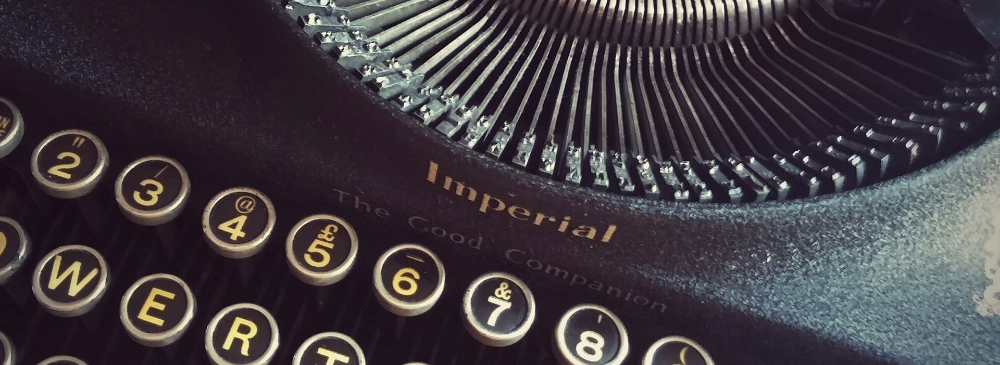

I'm herdsman of a flock.
The sheep are my thoughts
And my thoughts are all sensations.
I think with my eyes and my ears
And my hands and feet
And nostrils and mouth.
To think a flower is to see and smell it.
To eat a fruit is to sense its savor.
And that is why, when I feel sad,
In a day of heat, because of so much joy
And lay me down in the grass to rest
And close my sun-warmed eyes,
I feel my whole body relaxed in reality
And know the whole truth and am happy.
Pensar uma flor e ve-la e cheire-la
E comer um fruto e saber-lhe o sentido.
Por isso quando num dia de calor
Me sinto triste de goza-lo tanto.
E me deito ao comprido na erva,
E fecho os olhos quentes,
Sinto todo o meu corpo deitado na realidade,
Sei a verdade e sou feliz."